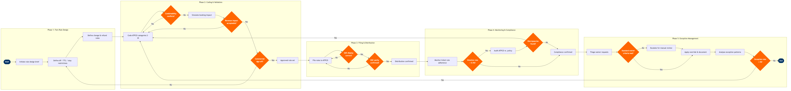

| Step | L4 Step Name | KPI / Target | Pain Point / Risk | Gate |
|---|---|---|---|---|
| 1.1 | Initiate fare rule design from revenue strategy | Rule design brief turnaround ≤3 business days from strategy directive | Pricing strategy changes arrive without lead time, forcing reactive rule authoring that increases first-pass error rates above 5% | |
| 1.2 | Define advance purchase and ticketing time limits | AP/TTL restriction accuracy ≥99.5% match to approved design brief | ATPCO Category 5 and Category 7 interactions are not validated automatically; misconfiguration creates phantom availability windows or incorrect fare displays across all three GDS channels | |
| 1.3 | Set minimum stay, blackout dates, and seasonality | Seasonal restriction accuracy ≥99%; blackout date coverage = 100% of designated periods | Aligning ATPCO Category 6 with Amadeus NRM inventory controls requires manual coordination — no automated sync exists between the RM system and ATPCO rule records | |
| 1.4 | Define change, cancellation, and refund rules | DOT 24-hour hold/refund rule compliance = 100%; change fee accuracy ≥99.8% | DOT 14 CFR Part 259 requires 24-hour hold or refund capability; ATPCO rule coding must precisely match website policy or exposes the airline to DOT enforcement action and reputational risk | |
| 2.1 | Code fare rules in ATPCO category format | First-pass coding accuracy ≥97%; coding cycle time ≤4 hours per rule set | ATPCO's 35-category structure requires deep specialist knowledge; errors in Category 10 (Combinability) cause fare construction failures in GDS that are difficult to isolate and trace post-publication | |
| 2.2 | Validate rule combinability and fare construction logic | Zero Category 10 combinability errors at filing; validation first-pass rate ≥95% | Interline combinability checks are not fully automated — manual cross-referencing against partner airline Category 10 entries is required; gaps cause booking failures on connecting itineraries and trigger agency debit memos | ⚠ |
| 2.3 | Simulate fare rule impact across booking scenarios | Simulation coverage ≥90% of active fare class/market combinations; revenue deviation from target ≤2% | PSS test environments may lag production by 24–48 hours, meaning simulation results may not reflect current inventory state or recently published competitor fares | ⚠ |
| 2.4 | Obtain commercial sign-off on rule parameters | Approval turnaround ≤1 business day; escalation rate <5% of submissions | Approval bottlenecks during peak retailing periods (holiday schedule filing) can delay time-sensitive competitive fare responses by 24+ hours, eroding revenue capture | ⚠ |
| 3.1 | Submit fare rules to ATPCO for publication | On-time filing rate ≥98%; filing lead time ≥4 hours before effective time (ATPCO minimum) | ATPCO filing windows have hard deadlines; rejected records or late submissions leave new fares without valid rules in GDS, causing tickets issued without rules to trigger agency debit memos | |
| 3.2 | Monitor GDS fare rule uptake and display accuracy | GDS rule display accuracy ≥99.5% within 2 hours of ATPCO effective time | GDS cache refresh cycles vary from 15 minutes to 4 hours across Sabre, Travelport, and Amadeus — rule updates display inconsistently during the refresh window, generating agent calls and booking errors | ⚠ |
| 3.3 | Validate NDC channel fare rule presentation | NDC rule display accuracy ≥99%; NDC-to-GDS rule parity ≥99.5% | NDC offer construction logic does not fully consume all ATPCO rule categories — partial rule implementation in NDC channels creates parity gaps that confuse travel agents and generate customer complaints and potential DOT scrutiny | ⚠ |
| 4.1 | Monitor fare rule adherence in issued tickets | Fare rule violation rate <0.5% of issued tickets; ADM (Agency Debit Memo) rate <0.1% of BSP transactions | Revenue integrity tools process violations in batch cycles, meaning violations are identified post-issuance; late detection increases ADM management cost and agency relationship friction | ⚠ |
| 4.2 | Audit ATPCO rule records against published policy | Rule accuracy vs. policy ≥99.8%; monthly audit cycle; critical discrepancy resolution ≤2 business days | Policy changes communicated via email or informal channels may not trigger ATPCO rule updates — misalignment is often discovered only during BSP audit or customer dispute, by which point revenue leakage has already occurred | ⚠ |
| 5.1 | Receive and triage waiver and override requests | Waiver triage time ≤4 hours; auto-approval rate for standard waivers ≥70% | Mass waiver events during IROPS or weather disruptions generate hundreds of simultaneous override requests — Altéa PSS manual queue processing becomes a critical bottleneck without automated mass-waiver tooling | ⚠ |
| 5.2 | Apply approved rule override and document exception | Override processing time ≤2 hours for approved waivers; 100% of exceptions documented in ServiceNow within 24 hours | Manual PNR-level overrides in Altéa are not linked back to the originating fare rule — tracking waiver volume and financial impact requires manual reconciliation against BSP settlement data | |
| 5.3 | Analyse exception patterns and update rule parameters | Exception pattern review cycle = quarterly; rule update trigger = >2% waiver rate on any single rule | Exception data is fragmented across Altéa, ServiceNow, and BSP with no unified dashboard — manual aggregation delays pattern recognition and allows suboptimal rule parameters to persist, increasing waiver costs | ⚠ |